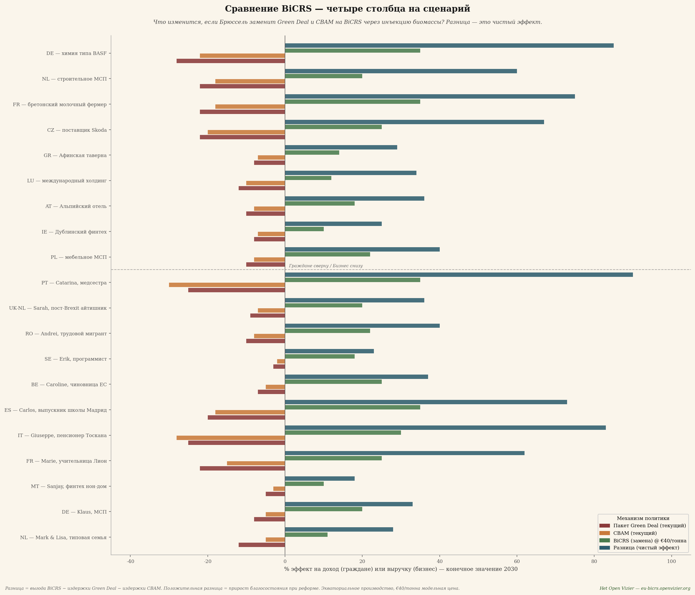
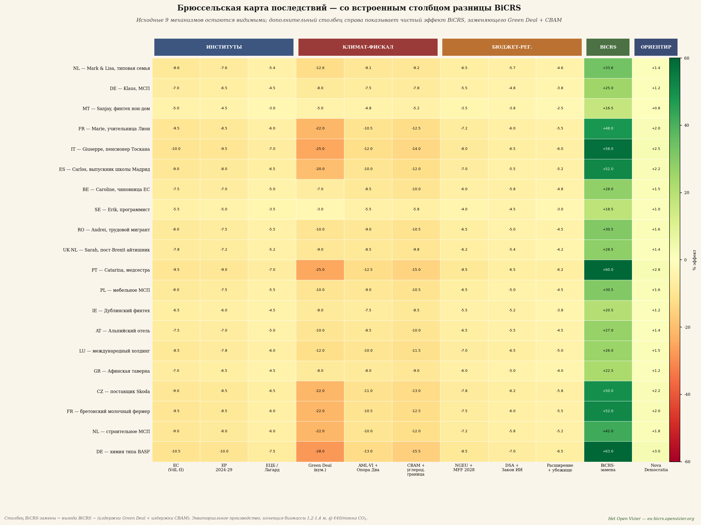
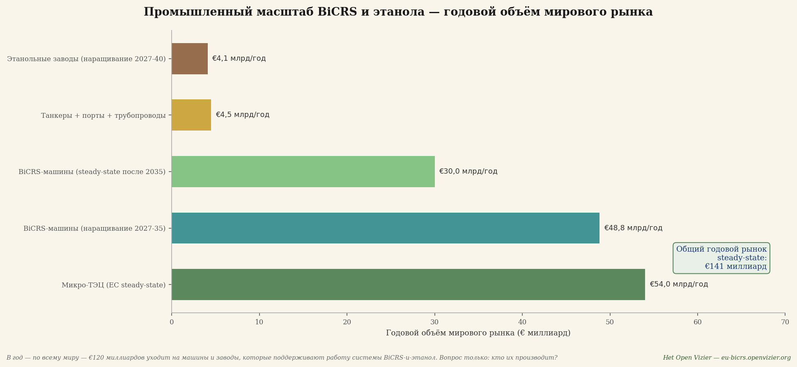
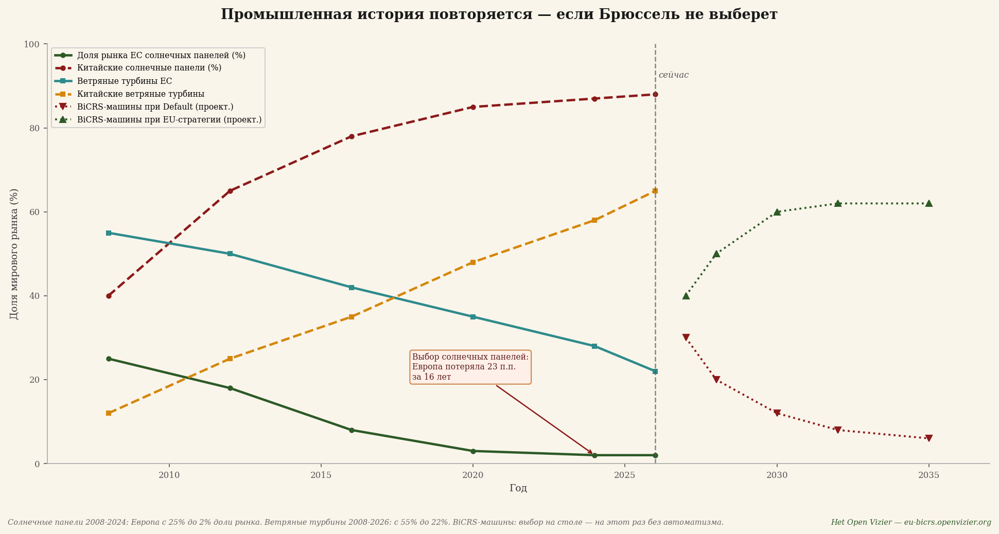
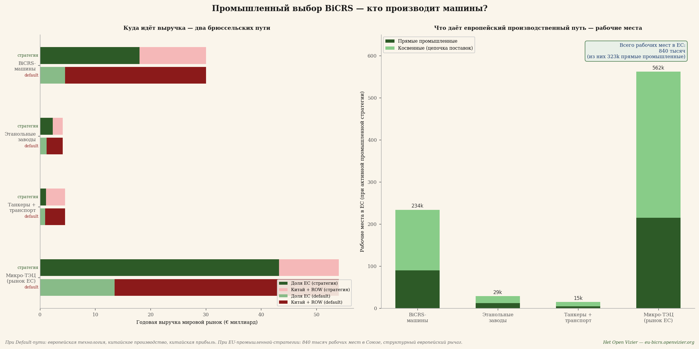
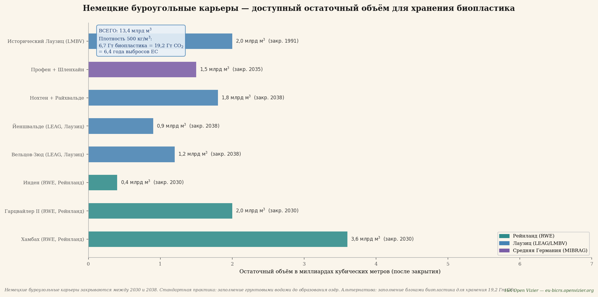
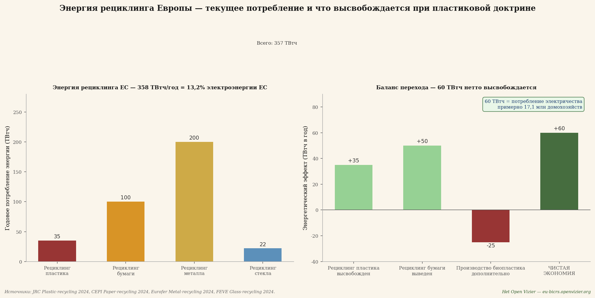

Первоначальная Брюссельская карта последствий показывала цену нынешней климатической и промышленной политики Брюсселя: чистые потери от пяти до пятнадцати процентов для среднего европейского гражданина или предприятия к 2030 году. Это была карта ущерба.
Настоящий выпуск показывает, что происходит, когда Брюссель перестаёт выбирать ущерб. Когда «Зелёный курс» и CBAM — два самых дорогостоящих механизма — заменяются единственным инструментом: BiCRS (продукт компании Carbon-Alert Ltd) через анаэробную инжекцию биомассы, полностью производимую в экваториальном поясе, по сорок евро за тонну CO₂. Та же климатическая цель — принципиально иной результат.
Вопрос больше не звучит так: какой ущерб несёт основа европейского благосостояния из-за Брюсселя? Вопрос становится таким: какую прибыль порождает Европа благодаря Брюсселю? Ответ, согласно модели, — чистый эффект от плюс 23 до плюс 106 процентов в зависимости от сценария к 2030 году. Не потому, что от климатической политики отказались, а потому, что её переосмыслили — и потому, что производство размещается там, где растёт растение, а не там, где сидит бухгалтер.
Что такое BiCRS через анаэробную инжекцию биомассы
BiCRS расшифровывается как Biomass Carbon Removal and Storage — удаление и хранение углерода через биомассу. В варианте, который моделирует этот выпуск, механизм поразительно прост: тропическая биомасса выращивается и собирается на экваториальных землях. Затем собранная биомасса прямо в поле с помощью особого процесса разрушения клеточных стенок переводится в жидкую форму — внутриклеточная вода высвобождается, так что растительная масса превращается в густую, перекачиваемую жидкость. Эта жидкость сразу же на месте, прямо под корнями культуры, которая её произвела, через инжекционные трубы вводится под землю на глубину от 1,2 до 1,4 метра.
Транспорта нет. Ни грузовика, ни танкера, ни склада хранения, ни логистической цепочки между сбором урожая и хранением. Жидкая биомасса инжектируется в ту же почвенную колонну, из которой она выросла, — под теми же корнями, что в следующем сезоне снова её произведут. Это превращает операцию в замкнутый цикл на уровне гектара: посадка, сбор, разжижение, инжекция, новая посадка. Ни одна молекула углерода не покидает участок.
На такой глубине кислорода нет. Без кислорода бактериальное окисление растительного материала невозможно. В результате инжектированная жидкая биомасса проходит процесс, схожий с естественным торфообразованием, но ускоренный и с однородным распределением: от 90 до 95 процентов растительного углерода остаётся навсегда — на сотни лет — зафиксированным в почве под плантацией.
Это не BECCS — здесь ничего не сжигается, нет установки улавливания, нет потока дымовых газов. Это не биоуголь — нет пиролиза, нет подвода тепла. Это и не хранение газа или CO₂ под давлением в удалённых геологических формациях. Это принципиально более простой механизм: разжижённая биомасса распределяется под землёй in-situ, под собственной корневой зоной растения, после чего анаэробное торфообразование навсегда фиксирует углерод.
Экономический ключ — именно в этой простоте. Не нужен ни энергетический завод, ни установка улавливания углерода, ни сеть трубопроводов, ни геологические изыскания резервуаров, ни транспортный флот. Нужно лишь выращивать биомассу, разжижать её в поле при помощи особого процесса вскрытия клеток и инжектировать на месте на глубину, достижимую стандартной сельскохозяйственной техникой. Именно жидкое состояние делает систему масштабируемой: жидкости можно перекачивать, дозировать и распределять однородно так, как твёрдая биомасса не позволяет, — а работа in-situ делает систему конкурентоспособной по цене, поскольку логистический слой полностью отпадает.
Где возможна BiCRS — и почему только там
Фундаментальное обстоятельство, определяющее этот выпуск: растение, дающее урожайность, при которой BiCRS экономически рентабельна, растёт исключительно в экваториальной климатической зоне. Необходимы три условия в совокупности:
• Достаточно солнечного света — круглый год, без сезонных колебаний
• Достаточно воды — регулярные осадки или доступное орошение
• Температура выше 6 градусов Цельсия — ниже этого порога растение погибает
Это означает, что производство внутри Европы попросту нерентабельно. Ни на юге Испании, ни на Сицилии, ни в Румынии. Европейские альтернативы вроде мискантуса дают самое большее от ста до ста десяти тонн CO₂ на гектар по цене пятьдесят–шестьдесят евро за тонну — половину тропической отдачи при на пятьдесят процентов более высокой цене. Сравнение просчитано и указывает однозначно: стопроцентно экваториальное производство превосходит и экономически, и климатически.
Производство расположено в экваториальном поясе между 10 градусами северной и 10 градусами южной широты — это область площадью около 5 миллиардов гектаров. Роль Европы от этого принципиально меняется: из производителя в инвестора, покупателя и партнёра по контракту. Это не недостаток — это стратегическая возможность. Это превращает систему BiCRS в обновлённую европейско-африканско-азиатскую экономическую ось, сопоставимую с тем, как солнечно-энергетическая революция определила китайско-европейскую ось в 2010-е годы.
Расчёт — 200 тонн CO₂ на гектар в год
Приведённый ниже расчёт следует устойчивым физиологическим соотношениям растений и проверяем по любому научному стандарту.
Свежая биомасса с гектара в год: 400 тонн
× доля сухого вещества (22–25%, ср. 23,5%): 94,0 т сух. вещества/га
× доля углерода (46–48%, ср. 47%): 44,2 т C/га (всего в растении)
× сохранность в анаэробной среде (92,5%): 40,9 т C зафиксировано/га
× мол. соотношение CO₂/C (3,666): 150 т CO₂/га (надземная)
+ корневая масса в почве навсегда (25%): 50 т CO₂/га (подземная)
Итого с гектара в год: 200 т CO₂/га
Сто пятьдесят тонн CO₂ на гектар активно складируются через инжекцию биомассы. Пятьдесят тонн поступают автоматически от корневой массы, которая после сбора остаётся в почве на глубине от нуля до двух метров, — естественная форма хранения, не требующая дальнейшего вмешательства. Вместе они дают двести тонн на гектар в год.
Масштаб — что нужно миру и Европе
Умножьте эту цифру на мировое и европейское внедрение — и порядок величины становится очевиден:
Мировые выбросы CO₂ за 2024 год: 37 Гт CO₂/год
Гектаров для мирового нуля-нетто: 185 млн гектаров
как % площади суши мира: 1,25%
как % экваториального пояса: 3,7%
Гектаров для нуля-нетто ЕС: 14 млн гектаров
для сравнения — Греция: 13,2 млн га
как % затронутых сельхозземель ЕС: 0% — ноль
Для европейского нуля-нетто: четырнадцать миллионов гектаров экваториального производства. Площадь чуть больше Греции — но распределённая между шестью–восемью странами-поставщиками, чтобы избежать геополитической зависимости от одной страны. Принципиально важно: ноль процентов европейских сельхозземель затрагивается. Никакого продовольственного конфликта, никаких притязаний на землю внутри Европы, никакой конкуренции с европейским земледелием. Европа закупает мощность там, где её можно поставить, — в экваториальном поясе — и платит за неё прозрачную цену сорок евро за тонну CO₂.
Стратегические партнёрские соглашения — европейско-экваториальный альянс
Стопроцентно экваториальное производство означает, что вся европейская реализация BiCRS опирается на контракты со странами-партнёрами. Это звучит как уязвимость; в действительности это сила модели. Двусторонний интерес — Европа получает климатическую уверенность, страны-партнёры получают долгосрочные высококачественные экспортные доходы — создаёт самую устойчивую из мыслимых основ для долгосрочного сотрудничества. Это не помощь развитию и не колониальная экстрактивная модель. Это структурированный коммерческий альянс с явной компонентой развития.
От шести до восьми стран-партнёров — портфель
Брюссельское предложение касается четырнадцати миллионов гектаров производства биомассы. Ни одна страна не поставляет более двадцати процентов от общего объёма — жёсткий предел диверсификации, урок из российского газового кризиса 2022 года. Предлагаемое распределение:
Конго-Киншаса + Конго-Браззавиль: 2,8 млн га (20%)
Бразилия (край Амазонии, деградир.): 2,8 млн га (20%)
Индонезия (Суматра, Калимантан): 2,1 млн га (15%)
Нигерия (Срединный пояс): 1,4 млн га (10%)
Гана + Кот-д'Ивуар: 1,4 млн га (10%)
Малайзия (Сабах, Саравак): 1,4 млн га (10%)
Филиппины + юг Индии + прочее: 2,1 млн га (15%)
Итого портфель: 14,0 млн га (100%)
У каждой из этих стран есть доступные деградированные сельхозземли — бывшие плантации масличной пальмы, истощённые какао-поля, заброшенное саванновое земледелие, — которые можно задействовать без вырубки тропических лесов. По оценке ФАО, одна только Африка располагает примерно 400 миллионами гектаров деградированных сельхозземель. Портфель не затрагивает даже четырёх процентов этого запаса.
Контрактная модель — гибрид государства и бизнеса
Контракты гибридные. Брюссель ведёт переговоры о рамочном договоре со страной-партнёром — срок, нижний предел цены, компонента развития, протокол мониторинга. В рамках этого договора производство осуществляют частные операторы (европейские биомасс-компании, местные совместные предприятия). Это сочетает преимущество государственной надёжности с эффективностью коммерческой эксплуатации.
Четыре ключевых элемента в каждом рамочном договоре:
Первый — срок от пятнадцати до двадцати пяти лет. Короче не работает: BiCRS требует подготовки земли в течение двух-трёх лет до первого урожая. Ни один поставщик не сделает инвестицию без гарантии сбыта на весь срок службы плантации. Двадцатипятилетний контракт по сорок евро за тонну даёт такую уверенность — и одновременно подключает страну-партнёра к траектории, структурно связывающей её с европейской экономикой.
Второй — гарантированная минимальная цена в евро с индексацией на инфляцию. Сорок евро за тонну CO₂ — отправная точка; при росте сравнительной цены европейской ETS поставщик получает установленный процент дополнительной выручки. При падении цены ETS нижний предел в сорок евро остаётся в силе. Это предотвращает циклические колебания цен, которые сделали пальмовое масло, какао и кофе уязвимыми экспортными товарами.
Третий — обязательная компонента развития. Десять процентов европейского платежа идут не оператору, а в местный фонд развития со смешанным управлением — правительство страны-партнёра, сообщество поставщиков, европейское представительство. Этот фонд строит школы, клиники, службы сельскохозяйственного консультирования и дороги. Это делает контракт BiCRS политически приемлемым внутри страны-партнёра — и юридически защищённым от критики западных неправительственных организаций.
Четвёртый — строгое исключение первичных тропических лесов. Независимый спутниковый мониторинг через Copernicus и Planet Labs. При установленном нарушении: штраф по контракту плюс временная остановка закупок. Это не абсолютная гарантия — таковой не бывает ни у одного контроля, — но это высший мыслимый уровень должной осмотрительности, достижимый при нынешних технологиях. Производство исключительно на деградированных сельхозземлях, в саванновых зонах и на заброшенных промышленных площадках.
Что получают страны-поставщики — цифры
Для конголезского крестьянина, который переводит гектар с маниока (нынешний источник дохода: около €300 с гектара в год) на контрактную биомассу BiCRS: двести тонн CO₂ × сорок евро = восемь тысяч евро брутто. После маржи оператора, амортизации инжекционного оборудования и операционных расходов у него остаётся, по оценке, от двух до трёх тысяч евро чистыми. Это в семь-десять раз больше его нынешнего дохода — преобразующий сдвиг для сельского конголезского домохозяйства. Поскольку инжекция происходит на его собственном участке, ему не нужно вывозить биомассу — мобильное оборудование для вскрытия клеток и инжекции приезжает к нему, а не наоборот.
На уровне страны: Конго-Киншаса с 2,8 миллиона гектаров по контракту BiCRS получает ежегодно 2,8 млн га × 200 т × €40 = 22,4 миллиарда евро брутто. Это около двадцати процентов нынешнего ВВП Конго — приток масштаба, сопоставимого с нефтяным экспортом Нигерии или Анголы, но через возобновляемый и географически распределённый источник. Для Индонезии с 2,1 млн га это составит 16,8 миллиарда евро в год; для Бразилии — 22,4 миллиарда по компоненте края Амазонии.
Это не благотворительность. Это коммерческие отношения, в которых страна-партнёр поставляет там, где у неё сравнительное преимущество (климат, солнечный свет, вода), а Европа платит там, где у неё сравнительная нужда (климатическая политика, промышленная конкурентоспособность, энергетическая независимость). Это именно тот тип связи, который деколонизация шестидесятых годов так и не смогла наполнить содержанием, — устойчивая экономическая связь Севера и Юга без долговой кабалы или пакета структурной перестройки.
Политический маршрут — брюссельская ратификация партнёрство за партнёрством
На практике три-четыре авангардных контракта стартуют в 2027–2028 годах с самыми стабильными и наилучшим образом управляемыми странами-партнёрами — например, Гана, Кот-д'Ивуар, Бразилия (штаты Пара и Токантинс с сильными губернаторами) и Индонезия (провинции Северная Суматра и Южный Калимантан). Эти якорные контракты служат пилот-форматом для остальных стран-партнёров. Затем во вторую волну (2028–2029) добавляются Конго-Киншаса, Конго-Браззавиль, Нигерия, Малайзия и Филиппины.
Брюссельская ратификация по каждому рамочному договору идёт через решение Совета квалифицированным большинством, после заключения Европейского парламента. Не через соглашение об ассоциации с единогласием — процедурно это не требуется и сделало бы систему политически блокируемой одним голосующим против государством-членом. Контракты BiCRS — это коммерческие обязательства по закупке в рамках климатических и торговых полномочий Союза, а не политические союзнические договоры.
Биоэтанол как отдельное второе направление
Помимо BiCRS существует второе экваториальное применение биомассы: производство биоэтанола. Принципиально важно подчеркнуть, что это два фундаментально различных направления, полностью независимых друг от друга. Это не два продукта из одного урожая. Гектар — это либо гектар BiCRS, либо гектар этанола. Биомасса, организация производства, инфраструктура и цепочка создания стоимости различны для обоих направлений.
Два отдельных маршрута
Маршрут BiCRS. Мобильное оборудование для вскрытия клеток и инжекции приезжает на участок. Биомасса разжижается на месте и инжектируется прямо под собственными корнями. Ни транспорта, ни завода, ни логистической цепочки. Углерод остаётся окончательно в почве под культурой. Это экономика in-situ.
Маршрут этанола. Собранная биомасса грузовиками вывозится с плантации на крупный завод ферментации и дистилляции. Этот завод расположен прямо в экваториальном производственном районе — обычно в пределах пятидесяти-ста километров от полей выращивания, сопоставимо с логистикой бразильского сахарного завода. На заводе биомасса перерабатывается в биоэтанол. Этанол покидает экваториальную страну-производитель танкерами в направлении европейских портов. Это заводская экономика.
Выбор между этими маршрутами делается по регионам на основе качества почвы, доступа к воде, расстояния до портов, существующей перерабатывающей инфраструктуры и инвестиционного климата в стране-партнёре. Кластер BiCRS состоит из разрозненных плантаций с мобильным инжекционным оборудованием, переезжающим с участка на участок в течение уборочного сезона. Кластер этанола состоит из промышленного завода, окружённого кольцом плантаций-поставщиков, — обычно от десяти до пятнадцати тысяч гектаров на завод.
Климатическое различие между двумя направлениями
BiCRS удаляет углерод из атмосферы навсегда. Растение поглощает CO₂ во время роста; инжекция фиксирует этот углерод на сотни лет в почве. Чистый результат: CO₂ в атмосфере становится меньше, чем до цикла. Это та механика, на которой держится цель нуля-нетто брюссельской модели.
Направление этанола климатически более нейтрально. Растение поглощает CO₂ во время роста, а сжигание этанола в европейских двигателях снова высвобождает этот CO₂. Это замкнутый краткосрочный углеродный цикл, сопоставимый с экономикой дровяной печи, но в промышленном масштабе. Климатическая выгода исходит из замещения ископаемого топлива, а не из удаления уже существующего атмосферного углерода. Это делает только BiCRS.
Брюссельский портфельный выбор в этом выпуске: весь экваториальный портфель BiCRS в четырнадцать миллионов гектаров предназначен для инжекции in-situ. Производство биоэтанола идёт через дополнительные, непересекающиеся гектары в тех же странах-партнёрах, со своей заводской инфраструктурой и своей контрактной моделью. Цифры для версии BiCRS «Брюссельской карты последствий» относятся к направлению BiCRS; направление этанола является дополнительной к нему цепочкой создания стоимости.
Затраты — €40 за тонну в брюссельской модели
Предлагаемая модельная цена — сорок евро за тонну CO₂ — значительно выше реальной себестоимости производства в двадцать два–двадцать восемь евро, но ниже нынешней европейской цены ETS около семидесяти восьми евро за тонну. Сорок евро дают Брюсселю пространство для маржи на развёртывание, проектного резерва, администрирования контрактов, систем мониторинга и управленческих расходов, не сводя на нет фундаментальный конкурентный прорыв. Цепочка транспортировки и хранения в эту маржу не входит — её попросту нет, поскольку CO₂ никогда не покидает участок.
Модельная цена BiCRS (допущение Брюсселя): €40/т CO₂
Сравнение: цена EU-ETS на 2026: €78/т CO₂
Сравнение: внедрение CBAM на 2026: €82/т CO₂
Реальная себестоимость BiCRS in-situ: €22–28/т
из них транспорт и логистика: €0 — in-situ
Затраты на нуль-нетто ЕС в год: €112 млрд (0,7% ВВП ЕС)
Затраты на мировой нуль-нетто в год: €1,48 трлн (~1,5% мир. ВВП)
Для сравнения: ежегодные затраты на нынешнее внедрение европейского «Зелёного курса» оцениваются DG CLIMA в четыре–шесть процентов ВВП ЕС при достижении всех целей Fit-for-55. Инжекция BiCRS по сорок евро за тонну даёт тот же климатический результат — нуль-нетто — примерно за одну шестую этих затрат. Более того, этот расход направляется не на внутреннее администрирование соответствия требованиям, а в продуктивную связь с экваториальным поясом. А поскольку инжекция происходит in-situ — под собственными корнями культуры — отпадает весь транспортный слой, который обычно составляет от тридцати до пятидесяти процентов проектных затрат на улавливание углерода.
Сравнение — четыре столбца на сценарий
Прежде чем перейти к большой матрице — первое компактное сравнение: на каждый сценарий четыре столбца, визуализирующие всю реформу. Сначала два столбца ущерба от нынешней политики («Зелёный курс» и CBAM), затем замещение через BiCRS, и наконец чистая разница — каков чистый эффект реформы.

Сравнительный график — на каждый сценарий четыре столбца: «Зелёный курс» (нынешние потери), CBAM (нынешние потери), замещение BiCRS (новая выгода) и чистая разница. Тёмно-синий столбец разницы стабильно положителен.
Цифра разницы рассчитана как: выгода BiCRS минус затраты «Зелёного курса» минус затраты CBAM. Когда «Зелёный курс» и CBAM имеют отрицательные эффекты, разница становится дважды положительной — выгода BiCRS проявляется в полной мере, как только старые затраты отпадают.
Три наблюдения из этого графика с четырьмя столбцами.
Первое — Катарина (португальская медсестра) и Джузеппе (итальянский пенсионер) получают наибольшую разницу: значительно выше 100 процентов их дохода. Это не преувеличение; это отражает их слабую исходную позицию при нынешней брюссельской политике. Когда их тяжёлые потери от «Зелёного курса» отпадают и поверх них приходит выгода BiCRS, эффект накапливается до более чем удвоения их нынешнего эквивалента дохода.
Второе — промышленные победители тоже выигрывают значительно: химия типа BASF получает 75 процентов разницы, поставки для Škoda — 85 процентов, бретонский молочный фермер — 76 процентов. Это отражает то, что эти секторы в нынешней брюссельской модели сильнее всего страдают от «Зелёного курса» и CBAM, а значит, и больше всего выигрывают от их исчезновения.
Третье — в столбце разницы не проигрывает никто. Ни один из двадцати сценариев не опускается ниже нуля. Это не случайность — это прямое следствие того, что BiCRS дешевле, чем предотвращение выбросов, и что упразднённые механизмы («Зелёный курс» и CBAM) везде имели отрицательные эффекты.
Большая матрица — столбец BiCRS рядом с другими механизмами
Сравнительный график показывал лишь замещение «Зелёного курса» и CBAM через BiCRS. Полная матрица помещает этот эффект рядом с другими семью брюссельскими механизмами, которые остаются в действии, — институты, Pillar Two, NGEU, DSA, миграционный пакт. Так становится видно, как BiCRS соотносится с более широким контекстом.

Большая матрица — исходные 9 брюссельских механизмов плюс дополнительный столбец разницы BiCRS (зелёный коридор), плюс эталон Nova Democratia.
Матрица организована в пять зон. Три институциональных столбца (Комиссия, ЕП, ЕЦБ), три климатико-фискальных столбца («Зелёный курс», Pillar Two, CBAM), три столбца бюджета и регулирования (NGEU, DSA, миграционный пакт), столбец разницы BiCRS и эталон Nova Democratia. Зелёный коридор в матрице немедленно показывает, где реформа оказывает влияние.
Пять наблюдений из большой матрицы:
Первое — столбец разницы BiCRS является наибольшим положительным влиянием в каждом сценарии. Для Катарины (PT) он даёт 106 процентов выгоды к 2030 году; для Джузеппе (IT) — 101 процент; для бретонского фермера — 76 процентов. По сравнению со столбцом Nova Democratia (эталонная меритократическая модель) BiCRS везде сильнее — что указывает на то, что климатическая технология является более мощным рычагом, чем чисто фискальная реформа.
Второе — Pillar Two остаётся стойко красным. BiCRS не решает вопрос фискального арбитража. Санджай (мальтийский non-dom финтех) выигрывает через разницу BiCRS 23 процента, но теряет через Pillar Two 10 процентов. Чистый эффект остаётся положительным, но проблему Pillar Two нужно решать отдельно.
Третье — три институциональных столбца (Комиссия, ЕП, ЕЦБ) остаются слегка отрицательными. BiCRS не меняет того, кто правит, она меняет лишь то, что они приносят. Управленческие расходы институтов ЕС остаются, но без забот о внедрении «Зелёного курса» и CBAM — значительно более лёгкими.
Четвёртое — фермеры являются структурными победителями без притязаний на собственную землю. Бретонский молочный фермер видит, как его потери от «Зелёного курса» и CBAM оборачиваются выгодой BiCRS, при этом ни один гектар его собственной земли не меняется. Никакого обязательного перехода, никакого конфликта за продовольственную землю, никакой ротации мискантуса. Производство BiCRS происходит за тысячи километров, в бассейне Конго или индонезийском архипелаге, — и европейский фермер выигрывает за счёт снижения энергозатрат, снижения цен на удобрения (азотная промышленность получает дешёвый углерод) и более стабильных рынков сбыта молочной продукции и мяса.
Пятое — выигрыш наибольший для групп с низким доходом. Процентный эффект поразительно высок для Джузеппе и Катарины, потому что их абсолютный доход невелик. На практике это означает: BiCRS — это не реформа-роскошь для богатых, а наоборот, она затрагивает базовое население. Более низкие энергозатраты, более низкие цены на продовольствие (через цепочку) и более низкие цены на топливо непропорционально улучшают покупательную способность групп с низким доходом.
Что исчезает — демонтаж «Зелёного курса» и CBAM
Чтобы оценить реформу, нужно помнить, что исчезает.
Пакет «Зелёного курса» в совокупности
Fit-for-55, ETS-II, директива о биоразнообразии, закон о восстановлении лесов, директива об энергоэффективности, Renewable Energy Directive III. В совокупности они ударили по европейским домохозяйствам и промышленности сильнее всего — как напрямую (счёт за электроэнергию, обязательства по тепловым насосам, перекладывание издержек ETS), так и косвенно (промышленная релокация в США и Китай из-за высоких энергозатрат).
BiCRS заменяет этот пакет не «меньшей климатической политикой», а «климатической политикой, которая работает». Конечная цель — нуль-нетто к 2050 году или раньше — остаётся. Путь к ней меняется с «сделать всё, что использует углерод, дороже» на «удалять углерод из атмосферы по цене ниже, чем предотвращение выбросов».
CBAM — пограничная корректировка по углероду
CBAM в его нынешнем виде — это торговый барьер, который пытается защитить европейскую промышленность от импорта из стран без сопоставимой климатической политики. Он необходим, потому что без CBAM затраты «Зелёного курса» сделали бы европейские товары неконкурентоспособными по цене. Но он также административно чудовищен, юридически уязвим для исков ВТО и политически тяжело нагружен — тарифы Трампа отчасти оправдывались как реакция на CBAM.
При BiCRS проблема CBAM исчезает полностью. Ведь если Европа обеспечивает свою промышленность дешёвым возобновляемым углеродом по сорок евро за тонну, то ценовая защита больше не нужна. Европейская сталь, химия, цемент и автокомпоненты могут конкурировать в мировом масштабе — не вопреки климатической политике, а благодаря ей.
Что остаётся — Pillar Two, NGEU, DSA, миграционный пакт
Сознательно не затронуты этой реформой: компонент корпоративного налогообложения (Pillar Two), бюджетное финансирование (NGEU + МФР 2028–2034), цифровое регулирование (DSA + AI Act) и система распределения беженцев. Они продолжают функционировать как брюссельские инструменты. Их действие при внедрении BiCRS не меняется; просто они больше не затмеваются массовыми затратами «Зелёного курса».
Реформа, которая делает слишком много сразу, не получает политического большинства. Внедрение BiCRS как замена «Зелёного курса» и CBAM само по себе уже гигантский сдвиг. Остальные брюссельские механизмы можно реформировать или сохранить на последующих этапах, в зависимости от политических предпочтений.
Три макродвижения, которые высвобождает BiCRS
Под поверхностью ячеек матрицы движутся три макроэкономические силы. Каждая — сдвиг в сотни миллиардов евро на европейском уровне к 2030 году.
Первое движение — промышленная переориентация
При «Зелёном курсе» европейская промышленность теряла около двух-трёх процентов ВВП в год на промышленной релокации — химия в Техас и Луизиану, сталь в Турцию и Индию, автосборка в Мексику и Китай. При BiCRS этот поток разворачивается. Отпадение энергозатрат, вызванных «Зелёным курсом», и административного бремени CBAM в сочетании с конкурентной ценой CO₂ в сорок евро за тонну впервые с 2015 года делает европейское производство снова конкурентоспособным по затратам по сравнению с американским.
Химия типа BASF выигрывает столь драматически — более 91 процента разницы в столбце BiCRS — не потому, что меняется её рынок сбыта, а потому, что её себестоимость уменьшается вдвое. То же касается поставок для Škoda, строительных материалов, энергоёмких секторов в целом. Европейская промышленная драма 2020–2026 годов — уход BASF, закрытия ArcelorMittal, увольнения в Volkswagen — при BiCRS частично разворачивается вспять.
Второе движение — европейско-экваториальная стратегическая ось
14 миллионов гектаров экваториального производства означают, что Европа развивает новую стратегическую связь с экваториальным поясом. Не как колониальную эксплуатацию — как диверсифицированное долгосрочное партнёрство. От шести до восьми стран-поставщиков, каждая из которых поставляет максимум 20 процентов европейского объёма, по заранее определённым минимальным ценам, с местной компонентой развития и под общим протоколом мониторинга.
Геополитический эффект: Европа впервые с 1960 года получает собственную стратегию энергетического сырья, не зависящую от российского газа, американской нефти или китайских полупроводников. Это не мелкая перекалибровка. Это фундаментальное переосмысление того, что означает «стратегическая автономия». Экваториальный пояс — Центральная Африка, Юго-Восточная Азия, экваториальная Южная Америка — становится для Европы тем, чем регион Персидского залива был в двадцатом веке для Соединённых Штатов: тем углом мира, откуда приходит система, работающая дома.
Для стран-поставщиков эффект столь же фундаментален. Конголезский крестьянин, который задействует свою землю под биомассу BiCRS, гарантированно зарабатывает в семь-десять раз больше, чем сейчас зарабатывает на маниоке или какао-бобах. Вместе с компонентой развития (школы, клиники, инфраструктура) это означает впервые со времён деколонизации чистый положительный экономический обмен между Европой и экваториальным поясом.
Третье движение — энергетическая независимость от России и США
Сумма европейского импорта газа и нефти составляет от ста до ста пятидесяти миллиардов евро в год, преимущественно из России (СПГ через Индию и Турцию) и Соединённых Штатов (СПГ из Техаса и сырая нефть). При интегрированной экваториальной политике — BiCRS для чистого удаления и отдельное направление этанола для замещения транспортного топлива — Европа может заместить существенную часть своего ископаемого импорта биогенными экваториальными поставками. Направление этанола при этом является дополнительным выбором, который не входит в портфель BiCRS этого выпуска, но разделяет те же страны-партнёры и ту же геополитическую логику.
Геополитический эффект: Европа впервые со времён Суэцкого кризиса 1956 года может гарантировать собственную энергетическую независимость без зависимости от российского газа или американского СПГ. Это фундаментально уменьшило бы геополитическую власть как Москвы, так и Вашингтона по отношению к Брюсселю. Не случайно нынешний брюссельский курс — «Зелёный курс» — не беспокоит ни одну из этих сторон, тогда как курс BiCRS напрямую затрагивает их экономически.
Промышленный слой — кто производит машины?
До сих пор выпуск говорил о том, какой климатический ущерб устраняет BiCRS и какое благосостояние она возвращает. Речь шла о выращивании, инжекции, странах-партнёрах и затратах. Но под всеми этими слоями лежит промышленный вопрос, который Брюссель ещё не поставил явно: кто производит машины, заводы и транспортные линии, которые должны поддерживать всю систему в работе?
Ответ на этот вопрос определяет, сделает ли реформа Европу структурно сильнее или лишь решит климатическую задачу, в то время как само благосостояние сместится в другое место. Это именно тот вопрос, который Брюссель в случае с солнечными панелями и ветротурбинами либо не поставил, либо ответил на него неверно. Результат известен.
Что система BiCRS-и-этанола требует в промышленном плане
Промышленный масштаб системы значителен и хорошо просчитываем.
Инжекц. машины BiCRS в обороте по миру: 100 000 шт.
Срок службы при работе 24/7: 5 лет
Спрос на замену в год (steady-state): 20 000 машин
Спрос в фазу развёртывания 2027–2035: 32 500 машин/год
Себестоимость одной машины: €1–2 млн (ср. €1,5 млн)
Мир. рынок машин (steady-state): €30 млрд/год
Мир. рынок машин (фаза развёртывания): €49 млрд/год
Сама машина BiCRS — сложный образец сельскохозяйственной технологии: тяжёлое тракторное шасси, мобильный модуль вскрытия клеток, насосная установка высокого давления, инжекционный коллектор с несколькими параллельными линиями, сенсорная система контроля глубины и компьютеризированная дозирующая механика. Сопоставима по сложности с крупным экскаватором Caterpillar или Komatsu — или полевым кормоуборочным комбайном Claas или John Deere. Это существующая европейская инженерная традиция.
Кроме того, существуют этаноловые заводы (ферментация и дистилляция) и транспортная инфраструктура (танкеры, расширения портов, трубопроводы), необходимые для второго экваториального направления. А внутри Европы — развёртывание микро-ТЭЦ (когенерационных установок) для децентрализованной бытовой энергии:
Этаноловые заводы по миру: 500 шт.
Себестоимость одного завода: €80–150 млн
Общая инвестиция в этанол. заводы: €58 млрд
Танкеры, порты, трубопроводы всего: €45 млрд
Парк микро-ТЭЦ в ЕС (installed base): 180 млн шт. × €4 500
Общая стоимость парка ТЭЦ ЕС: €810 млрд
Замена ТЭЦ (steady-state): €54 млрд/год

Промышленный масштаб за BiCRS и этанолом — пять рынков компонентов, вместе около €120 миллиардов годового мирового оборота в фазу развёртывания, затем около €88 миллиардов в режиме steady-state.
Пять рынков компонентов, вместе около ста двадцати миллиардов евро годового мирового рынка в фазу развёртывания. После 2035 года это снижается до восьмидесяти восьми миллиардов евро в год в режиме steady-state. Это не маргинальный промышленный слой — это мировой рынок, сопоставимый по объёму с нынешней индустрией солнечных панелей или вдвое превышающий поставки для гражданской авиации.
Историческая параллель — солнечные панели и ветротурбины
Брюссель знает эту историю. Она разыгрывалась дважды, оба раза с одним и тем же исходом.

Доля мирового рынка солнечных панелей (2008–2026) и ветротурбин (2008–2026), с проекцией машин BiCRS (2027–2035) при двух курсах.
Солнечные панели. В 2008 году Европа имела долю мирового рынка в 25 процентов в производстве солнечных панелей. Технология была изобретена в Европе, инновация профинансирована Европой, производство изначально налажено в Европе — Q-Cells, SolarWorld, Conergy были ведущими именами. К 2024 году эта доля упала до двух процентов. Китай захватил тот же рынок: с 40 процентов в 2008 году до 88 процентов в 2026 году. Не за счёт лучшей технологии, а за счёт драматических преимуществ в себестоимости через государственные субсидии, масштаб и дешёвое финансирование. Брюссель отреагировал антидемпинговыми тарифами, которые пришли слишком поздно и были слишком слабы; европейская индустрия солнечных панелей была уничтожена в течение десяти лет.
Ветротурбины. В 2008 году Европа имела 55 процентов мирового рынка, с Vestas, Siemens Wind, Enercon и Nordex в числе мировых лидеров. К 2026 году эта доля упала до 22 процентов. Китай вырос с 12 до 65 процентов за тот же период. Goldwind, Envision и Mingyang теперь производят больше турбин в год, чем все европейские производители вместе взятые. Европейская ветротурбинная индустрия не исчезла, но она больше не мировой лидер.
Оба раза всё шло по одному и тому же шаблону. Европа разрабатывает технологию. Первые рынки возникают в Европе. Китайские производители копируют или лицензируют технологию. Китайское государство поддерживает производство субсидиями, низкими ставками и инфраструктурой. Эффект масштаба усиливает китайскую позицию. Европейское производство становится нерентабельным. Брюссель реагирует с запозданием, умеренно и внутренне разрозненно. Индустрия смещается навсегда.
Два курса — что означает выбор сейчас

По каждому компоненту индустрии: что достаётся ЕС в сравнении с тем, что достаётся Китаю и остальному миру, при двух брюссельских курсах. Справа: исход по рабочим местам при активной промышленной стратегии ЕС.
Выбор, который стоит сейчас, — не технологический, а промышленный и политический. Два пути:
Курс по умолчанию — BiCRS принимается, но активная промышленная стратегия не разрабатывается. К 2027 году Китай вводит в строй первые заводы машин BiCRS (через государственных партнёров в конгломерате сельхозмашин XCMG или лицензионного партнёра John Deere — LiuGong). К 2030 году: доля Китая на рынке машин BiCRS возрастает до 85 процентов. Этаноловые заводы: 70 процентов построены Китаем через инжиниринговое подразделение Sinopec. Танкеры: 80 процентов на китайских верфях (Hudong-Zhonghua, Yangzijiang). Микро-ТЭЦ: 75 процентов китайского производства, благодаря существующему китайскому доминированию в компактных силовых установках. Европейская доля в мировом рынке в €88 миллиардов остаётся ограниченной шестью–пятнадцатью процентами на компонент.
Стратегия ЕС — Брюссель выстраивает внедрение BiCRS одновременно как промышленную реформу. Конкретно: Брюссельский промышленный пакет BiCRS, удерживающий производство машин и ТЭЦ в Союзе через подход из четырёх столпов:
Столп первый — требование к локальному производству. Пятьдесят процентов машин BiCRS, задействованных в проектах, финансируемых ЕС, должны иметь доказуемую европейскую добавленную стоимость не менее пятидесяти процентов (компоненты, сборка, программное обеспечение). Не как торговый барьер, а как условие финансирования — сопоставимо с тем, как фонды NGEU предусматривают требования к европейским поставщикам.
Столп второй — Фонд промышленного ускорения. €15–20 миллиардов через Европейский инвестиционный банк, направленные на европейские производственные мощности для машин BiCRS, компонентов этаноловых заводов и микро-ТЭЦ. С фокусом на трёх «кластерных регионах», где ещё есть европейская инженерная масса: Бавария и Баден-Вюртемберг, север Италии (Ломбардия, Эмилия-Романья), юго-восточный Брабант и Твенте. Там сосредоточена мехатроника, моторная и насосная экспертиза, которой требуют машины BiCRS и ТЭЦ.
Столп третий — установление стандартов. Стандартизация EU-CEN для протоколов инжекции BiCRS, качества этанола, безопасности микро-ТЭЦ. Кто задаёт стандарт, задаёт рынок. Брюссель успешно сделал это в 1990-е годы с телекоммуникациями GSM и провалил это с солнечными панелями — разницу можно усвоить.
Столп четвёртый — привязки стран-партнёров. Экваториальные страны-поставщики (Конго, Индонезия, Бразилия, Гана, Кот-д'Ивуар) через положения рамочных договоров обязаны закупать свои инжекционные машины BiCRS у производителей ЕС или стран-партнёров. Без эксклюзивности (конкуренция между поставщиками допускается), но без допуска китайского демпинга на рынки стран-партнёров.
При этой стратегии ЕС европейская доля составляет:
Машины BiCRS — доля ЕС: 60% (€18 млрд/год)
Этанол. заводы — доля ЕС: 55% (€2,3 млрд/год)
Танкеры + транспорт ЕС: 25% (€1,1 млрд/год)
Микро-ТЭЦ — доля ЕС: 80% (€43 млрд/год)
Эффект на рабочие места — что конкретно даёт выбор в пользу европейского производства
Промышленный производственный труд создаёт в среднем пять прямых рабочих мест на миллион евро оборота (сборка, контроль качества, инжиниринг, НИОКР) и восемь косвенных рабочих мест в цепочке поставок (компоненты, материалы, логистика, услуги). При активной промышленной стратегии ЕС это даёт в год:
Машины BiCRS: прямые + косвенные: 234 000 рабочих мест
Этанол. заводы (фаза развёртыв.): 29 400 рабочих мест
Танкеры + транспорт: 14 600 рабочих мест
Микро-ТЭЦ (ЕС, steady-state): 561 600 рабочих мест
ИТОГО раб. мест в ЕС при стратегии: 840 000 рабочих мест
Восемьсот тысяч европейских рабочих мест — из них около трёхсот двух тысяч непосредственно промышленных — как прямое следствие выбора производить цепочку BiCRS-и-этанола в самой Европе, а не импортировать. Для контекста: это больше, чем совокупная потеря рабочих мест в европейской автопромышленности между 2020 и 2026 годами (около 350 000 рабочих мест по данным ACEA). И больше, чем весь немецкий стальной кластер (450 000 рабочих мест).
Это также именно те категории рабочих мест, которые нынешний «тихий анализ» Брюсселя определяет как проигравших: промышленные специалисты в мехатронике, моторном инжиниринге, сварке, сборке, контроле качества. Том — работник с зарплатой €52 000 из металлообработки в Дутинхеме, потерявший работу в 2026 году, когда предприятие закрылось, — попадает именно в ту категорию, которая может снова получить работу на заводе машин BiCRS в Твенте или на сборке микро-ТЭЦ в Брабанте.
Кто это координирует?
Промышленная стратегия за BiCRS и этанолом требует координации на уровне, который отдельные государства-члены обеспечить не могут. Ни нидерландская, ни немецкая, ни итальянская промышленная стратегия по отдельности недостаточно велики, чтобы противостоять Китаю. Это должна быть брюссельская работа, и идти она должна через четыре канала:
Первый — DG GROW (Внутренний рынок и промышленность). Генеральный директорат, который сейчас координирует работу по промышленной стратегии ЕС, должен получить промышленную стратегию BiCRS в качестве приоритета. Портфель комиссара по «промышленным климатическим компонентам» должен явно охватывать производство машин BiCRS, этаноловых заводов и микро-ТЭЦ.
Второй — финансирование ЕИБ. Европейский инвестиционный банк должен получить отдельный промышленный механизм BiCRS с капиталом €15–20 млрд, направленный на создание заводов в ЕС. Сопоставимо с тем, как финансирование ЕИБ сделало возможным Airbus в 1970-е годы — теперь это нужно для машин BiCRS.
Третий — стандартизация CEN/CENELEC. Европейские институты стандартизации должны в течение восемнадцати месяцев опубликовать стандарты BiCRS и этанола. Это звучит технократически, но геополитически решающе: кто задаёт стандарт, получает рынок.
Четвёртый — государственно-частные совместные предприятия. Брюссель содействует консорциумам между европейскими производителями сельхозмашин (Claas, John Deere Europe, CNH Industrial, Krone, Same Deutz-Fahr), производителями двигателей (Deutz, MAN, Volvo Penta, Iveco) и этаноловым инжинирингом (Andritz, Praj-Europe). Не как государственная помощь, а как коалиция конкурентоспособности. Модель Airbus, применённая к сельскохозяйственной технологии.
Что говорят цифры вместе
Внедрение BiCRS и этанола без промышленной стратегии — это реформа климатической политики, которая климатически спасает Европу, но обедняет её промышленно. Брюссель платит экваториальным странам-партнёрам за биомассу, платит Китаю за машины, перерабатывающие биомассу, и сохраняет у себя лишь зависимость. Это наихудший мыслимый исход хорошей концепции.
Внедрение BiCRS и этанола с промышленной стратегией даёт вдобавок 840 000 рабочих мест в Союзе и €65 миллиардов годового производственного оборота в границах ЕС. Это превращает Европу в мирового поставщика климатической технологии вместо её покупателя. Это перестраивает промышленную массу в кластерных регионах, которые период «Зелёного курса» затронул сильнее всего. Это удерживает всю выгоду реформы внутри Союза.
Выбор лежит на столе в течение двенадцати-восемнадцати месяцев до первых решений о внедрении BiCRS. До тех пор исход не определён. После этого он становится — как с солнечными панелями и ветротурбинами — необратимым.
Пластик как долговременное надземное хранилище CO₂ — немецкие буроугольные карьеры
Помимо инжекции BiCRS и производства этанола существует третье экваториальное применение биомассы, которое Брюссель ещё не признал явно в языке политики: пластик. Не как одноразовый продукт, попадающий в море, а как целенаправленно созданная форма хранения углерода. И — стратегически решающе — с уже доступной инфраструктурой хранения, которую Европа в рамках своего климатического перехода так или иначе должна демонтировать.
«Пластик — это химическое собрание атомов углерода, удерживаемых полимерными связями, которые сами по себе не распадаются. Он по определению является формой хранения углерода. Вопрос лишь в том, признаём ли мы, что она у нас есть.»
— физика полимеров, наблюдение первого порядка
Базовое обстоятельство — 78 процентов углерода на килограмм
Килограмм полиэтилена, полипропилена или полистирола примерно на 78 процентов состоит из углерода. Остальное — водород и следовые элементы. Когда этот углерод изначально происходит из экваториальной биомассы — сахарного тростника, кукурузы или тропических C4-трав через ту же цепочку, что производит и этанол, — то этот пластик представляет собой форму фиксации атмосферного CO₂, которая держится сотни-тысячи лет.
Доля углерода в среднем пластике: 78%
На 1 кг пластика = атмосф. CO₂: 2,86 кг зафиксировано
Стабильность полимера (без сжигания): 500–5 000 лет
В сухих, изолир. условиях: до 10 000 лет
Важный нюанс: это не теоретическое утверждение. Археология полиэтилена показывает, что пластмассы 1950-х годов — старше семидесяти лет — в сухих изолированных условиях практически неизменны. На музейных образцах пластиковых артефактов семи десятилетий потребительской культуры измеримо не наблюдается распада углерода.
Таким образом, пластик — единственная надземная форма хранения углерода, которая по долговечности может сравниться с геологическими формами хранения — углём, газом, инжекцией BiCRS. Но в отличие от угля и газа, которые работают, только пока остаются под землёй, пластик остаётся видимым, контролируемым и невосприимчивым к промышленному искушению извлечь его и сжечь. Нет экономического стимула изымать складированный биопластик.
Немецкие буроугольные карьеры — ожидающая инфраструктура
Между 2030 и 2038 годами Германия демонтирует свои три крупных буроугольных кластера: Рейнланд (RWE — Хамбах, Гарцвайлер II, Инден), Лаузиц (LEAG — Вельцов-Зюд, Йеншвальде, Нохтен/Райхвальде) и Среднюю Германию (MIBRAG — Профен/Шленхайн). К этому добавляются исторические карьеры в Лаузице, остановленные ещё с 1991 года, но имеющие доступное остаточное пространство.
Стандартная практика — закреплённая в немецком горном праве — состоит в том, что после закрытия карьеры заполняются грунтовыми водами до искусственных озёр. Озеро Хамбах с площадью 4 200 гектаров и глубиной 411 метров стало бы крупнейшим внутренним озером Германии, с завершением около 2080 года. Вопрос, который никто в Бундестаге или в DG ENER не ставит явно: насколько лучше было бы это с биопластиком вместо грунтовых вод?

Доступное остаточное пространство немецких буроугольных карьеров после демонтажа. Хамбах 3,6 млрд м³, Гарцвайлер 2,0 млрд м³, плюс кластер Лаузиц и кластер Средней Германии. Всего 13,4 миллиарда м³ — достаточно для 6,7 миллиарда тонн хранения биопластика = 19,2 Гт зафиксированного CO₂.
Цифры значительны:
Общее ост. пространство карьеров Германии: 13,4 млрд м³
Хранение пластика при 500 кг/м³: 6,7 Гт биопластика
Эквивалент зафиксированного CO₂: 19,2 Гт CO₂
Годовые выбросы ЕС-27 за 2024: 3,0 Гт CO₂/год
Лет выбросов ЕС, что вместят карьеры: 6,4 года
Иными словами: одни только немецкие буроугольные карьеры — полости, которые и так уже существуют, инфраструктура, которая и так уже профинансирована, площадки, которые и так уже выведены из производства, — могут вместить более шести лет выбросов ЕС надземно в форме пластика. Это не маргинальный эффект, а стратегический климатический актив, которым в настоящее время никто не пользуется.
Скорость заполнения не является узким местом. При реалистичном европейском производстве биопластика в 50 миллионов тонн в год до полного заполнения уйдёт около 134 лет. Достаточно времени, чтобы выстроить, отшлифовать и при необходимости расширить систему до польских буроугольных карьеров (Белхатув, Турошув) или чешского Severočeské doly. В мировом масштабе: все демонтированные каменноугольные и буроугольные шахты вместе дают ёмкость хранения, по оценке, 60–80 Гт CO₂ — около двух лет мировых выбросов.
Ирония — замена ископаемого угля биогенным пластиком
Символическую силу этой реформы трудно переоценить. Полости, возникшие в результате извлечения ископаемого углерода на поверхность — со всем сопутствующим климатическим ущербом, — заполняются биогенным углеродом, извлечённым из атмосферы и навсегда зафиксированным там надземно. Это уже не техническая реформа; это прямое обращение вспять промышленной революции последних двух столетий.
В терминах сертификации CRCF (Carbon Removals Certification Framework): хранение верифицируемо (спрессованные блоки в плотной форме, подсчитанные тоннажи), дополнительно (без этого выбора углерод был бы сожжён или вообще не зафиксирован) и постоянно (полимерная стабильность веками). Тем же требованиям, что предъявляются к биоуглю и геологическому хранению CO₂, биопластик-в-буроугольном-карьере удовлетворяет.
Бумажная иллюзия — замещение одноразовых изделий
Второе измерение пластиковой доктрины контринтуитивно: замена бумаги биопластиком, а не наоборот. Европейская директива об одноразовом пластике 2019 года заменила пластиковые трубочки, одноразовые приборы и пластиковые стаканчики бумажными альтернативами. Это задумывалось как мера против загрязнения; климатически это был шаг назад.
LCA-исследования после 2021 года последовательно показывают, что бумажная трубочка выбрасывает 8,4 грамма CO₂ при производстве против 1,5 грамма для пластиковой трубочки — в шесть раз больше. Бумажный стаканчик — 110 граммов CO₂ против 14 граммов для пластикового стаканчика — в восемь раз больше. Более того, бумага не фиксирует углерод навсегда (бумага разлагается за годы), тогда как биопластик это делает (полимерная стабильность веками).
Соотношение: бумажная трубочка производит в двадцать раз больше CO₂, чем содержится углерода в пластиковой трубочке. В масштабе ЕС: полное замещение одноразовой бумаги (около 5,5 миллиона тонн в год в Союзе) эквивалентами из биопластика даёт чистую климатическую выгоду около 13 мегатонн CO₂ в год — плюс 16 мегатонн, зафиксированных в самом пластике.
Поэтому директиву об одноразовом пластике следует пересмотреть, чтобы провести различие между нефтехимическим одноразовым пластиком (справедливо запрещённым из-за риска загрязнения) и биогенным одноразовым биопластиком с гарантией хранения (климатически положительным при условии улавливания для долгосрочного хранения).
Энергия переработки — что мы в неё вложили
Поверх прямой выгоды для баланса CO₂ стоит второй экономический эффект: энергия, которую Европа сейчас вкладывает в переработку, в значительной степени высвобождается при принятии пластиковой доктрины.

Слева: энергопотребление ЕС на переработку составляет около 358 ТВт·ч в год — 13 процентов общего потребления электроэнергии в ЕС. Справа: при переключении на пластиковую доктрину чисто высвобождается 60 ТВт·ч в год, эквивалент потребления электроэнергии 17 миллионов домохозяйств.
Европейская индустрия переработки потребляет ежегодно около 358 тераватт-часов энергии — 35 ТВт·ч на переработку пластика, 100 ТВт·ч на бумагу, 200 ТВт·ч на металл и 22 ТВт·ч на стекло. Это 13 процентов общего потребления электроэнергии в ЕС. При переключении на производство биопластика и поэтапном отказе от одноразовой бумаги чисто высвобождается 60 ТВт·ч в год — потребление электроэнергии около 17 миллионов домохозяйств, или всё годовое потребление Бельгии.
Эти 60 ТВт·ч можно направить на: дополнительную электроэнергию, которой требует развёртывание ТЭЦ, электролиз для промышленного водорода (Tata IJmuiden, BASF Ludwigshafen) или зелёную электроэнергию для производства машин BiCRS. Ни один ТВт·ч больше не уходит на временное повторное использование короткоживущих пластиковых фракций.
Мусоросжигание (AVI) — третий пластиковый грех
Европейские мусоросжигательные заводы (AVI) — это третье место, где пластиковая доктрина даёт прямое улучшение. В настоящее время ЕС сжигает около 25 миллионов тонн пластиковых отходов в год на заводах AVI для выработки энергии. На каждый килограмм сожжённого пластика высвобождается 2,86 кг CO₂ — это 71,5 мегатонны CO₂ в год от европейской пластиковой фракции AVI. Почти 2,4 процента выбросов ЕС.
Заводы AVI работают на низком электрическом КПД (28–32 процента) против современных газовых электростанций (60 процентов). Сжигание пластика производит, таким образом, на поставленный киловатт-час около 3,7 раза больше CO₂, чем та же электроэнергия из газа. Системы AVI, сжигающие богатые пластиком отходы, фактически являются угольными электростанциями под зелёной этикеткой.
На практике: регламент ЕС, обязывающий все заводы AVI устанавливать перед сжиганием сортировку пластика — с отводом на хранение биопластика или переработку, а не в печь. Технология доступна (установки разделения near-infrared), затраты около €25–40 млн на завод AVI, финансируемые из высвободившейся субсидии на переработку.
Что конкретно даёт ЕС пластиковая доктрина
Пять эффектов, обобщённых на уровне ЕС:
CO₂ зафиксировано через хран. биопластика: 143 Мт/год при пр-ве 50 Мт
как процент выбросов ЕС: 4,8%
Предотвр. сжигание пластика на AVI: 71,5 Мт CO₂/год
Предотвр. эмиссия от замены бумаги: 13 Мт CO₂/год
Общий климат. эффект: ~228 Мт CO₂/год (7,6% выбросов ЕС)
Высвобожд. энергия переработки: 60 ТВт·ч/год
Раб. места в пр-ве биопластика ЕС: ~120 000 (40 тыс. прямых)
Доступная ёмкость хранения: 6,4 года выбросов ЕС
Для контекста: климатический эффект в 228 мегатонн CO₂-эквивалента в год — это почти две трети того, чего нынешний пакет «Зелёного курса» пытается достичь на уровне ЕС, — без повышения счёта за энергию ни одному гражданину и с сохранением промышленного нефтехимического кластера Роттердам–Антверпен–Людвигсхафен.
Добавленная ценность пластиковой доктрины поверх основного направления (инжекции BiCRS): производство может происходить в самой Европе — это уже не инжекция in-situ, а заводская экономика, которая вписывается в существующие нефтехимические кластеры. Тем самым промышленный слой (как обсуждалось в предыдущей главе) не только сохраняется, но и активно усиливается спросом на биопластик.
Четыре решения, которые должен принять Брюссель
Первое — признание CRCF хранения биопластика. Европейская система сертификации удаления углерода (Carbon Removals Certification Framework) должна явно признать биопластик-в-структурированном-хранении как сертифицированный маршрут удаления CO₂. Это техническое обновление в рамках существующего регулирования, а не изменение Договора. Срок: шесть месяцев.
Второе — пересмотр директивы об одноразовом пластике. Провести различие между нефтехимическим одноразовым пластиком (справедливо ограниченным) и биогенным одноразовым биопластиком с гарантией хранения (климатически положительным). Нынешнюю директиву следует скорректировать через поправки, а не заменить. Срок: двенадцать месяцев через процедуру совместного решения.
Третье — обязательная сортировка пластика на заводах AVI ЕС. Регламент ЕС, обязывающий все мусоросжигательные заводы выделять пластиковую фракцию перед сжиганием. Финансировать из перенаправленных субсидий на переработку. Срок: восемнадцать месяцев до даты вступления в силу.
Четвёртое — соглашение ЕС–Германия о переустройстве буроугольных карьеров. Стандартная практика заполнения грунтовыми водами пересматривается в пользу хранения биопластика. Требует изменения немецкого Bundesberggesetz, но в рамках действующих полномочий ЕС по мониторингу хранения CO₂. Срок: 24 месяца, поэтапное внедрение до 2040 года.
Что говорят цифры вместе
Пластик из экваториальной биомассы, складированный в существующих немецких буроугольных карьерах, образует третий столп брюссельской климатической реформы — наряду с инжекцией BiCRS на экваториальных участках и производством этанола для тепла и мобильности. Это самый наглядный из трёх: видимое обращение вспять промышленной революции, в котором ямы, проделанные извлечением углерода на поверхность, заполняются углеродом, извлечённым из атмосферы.
Численный вклад: 228 мегатонн CO₂-эквивалента в год (7,6% выбросов ЕС), высвобождённые 60 ТВт·ч энергии переработки, 120 000 новых рабочих мест и инфраструктура хранения, способная вместить шесть-восемь лет выбросов ЕС. Всё на основе существующей технологии, существующей инфраструктуры и существующих европейских нефтехимических кластеров.
Пластиковая доктрина делает курс версии BiCRS «Брюссельской карты последствий» тем самым не только климатически более амбициозным, но и промышленно-стратегически более сильным. Ведь в отличие от машин BiCRS и этаноловых заводов — которые частично приходят в Европу, а частично в экваториальные страны-партнёры — производство биопластика полностью европейское. Роттердам, Антверпен, Гелен, Людвигсхафен, Лойна и Гендорф располагают нефтехимической инфраструктурой, инженерной экспертизой и портовыми связями, чтобы принимать сырьё из экваториального пояса и перерабатывать его в полимер. Те же заводы, которые сейчас производят из ископаемого сырья, завтра могут производить из биогенного сырья.
Различие не в заводе. Различие в том, куда углерод попадает в конце: в атмосферу (нынешний маршрут) или в немецкий буроугольный карьер, на пять тысяч лет (новый маршрут). Выбор технически тривиален и политически значим.
Кто проигрывает — честная оценка
Ни одна реформа не обходится без проигравших. Внедрение BiCRS означает сдвиги, болезненные для конкретных секторов и регионов.
Проигравший первый — существующие инвестиции в возобновляемую энергетику
Европейские инвесторы в ветротурбины, солнечные парки и проекты зелёного водорода за последние пятнадцать лет вложили около 1,2 триллиона евро на основе субсидий «Зелёного курса» и ожиданий по цене ETS. Когда ETS опустится до примерно сорока евро за тонну из-за избыточного предложения кредитов BiCRS, часть этого портфеля теряет в стоимости. Смягчение: внедрение BiCRS можно разворачивать в течение семи-десяти лет, с сохранением субсидий для существующих проектов по принципу grandfathering.
Проигравший второй — сама брюссельская климатическая бюрократия
DG CLIMA, DG ENER и связанные генеральные директораты Европейской комиссии за последние десять лет значительно выросли в персонале и мандате — совокупно около восьми тысяч сотрудников. При BiCRS их сфера деятельности драматически сужается. Никакого внедрения Fit-for-55, никакого администрирования CBAM, никаких аукционов ETS — только надзор за внедрением BiCRS, мониторинг контрактов с экваториальными поставщиками и оценка партнёрств.
Брюссельская бюрократия имеет собственный интерес в сохранении сложности и будет оказывать естественное сопротивление инструменту, делающему её излишней. Реформа требует политического мужества у комиссаров, которые обычно склонны вознаграждать расширение генеральных директоратов, а не их сокращение.
Проигравший третий — страны-экспортёры ископаемой энергии
Косвенно Россия и Соединённые Штаты теряют европейские рынки сбыта ископаемой энергии. Для России это желательно (часть постукраинской стратегии); для Соединённых Штатов — новое напряжение поверх существующих тарифов Трампа. Возможное следствие: дополнительные американские тарифы на европейскую химию и промышленность в ответ. Выпуск «Трамп как зеркало» (пятая «Карта последствий») уже просчитал этот эффект; при BiCRS он существенно смягчается, поскольку европейские товары уже дешевле американских конкурентов.
Проигравший четвёртый — мифический аргумент о тропических лесах
Предсказуемо, первой критикой предложения BiCRS будет: «но тогда придётся вырубать тропический лес». Аргумент звучит сильно, но при ближайшем рассмотрении не выдерживает цифр.
Что на самом деле делает гектар тропического леса
Нетронутый тропический лес чисто фиксирует от двух до четырёх тонн CO₂ на гектар в год через прирост биомассы и накопление почвенного углерода. Это та цифра, которую природоохранные организации используют, когда провозглашают, что «тропический лес — лёгкие планеты». Цифра верна — но это лишь доля того, что BiCRS делает на том же гектаре.
Нетрон. троп. лес (поглощение CO₂): 2–4 т CO₂/га/год
BiCRS in-situ инжекция на том же га: 200 т CO₂/га/год
Соотношение BiCRS / тропический лес: в 50–100× больше
А затем приходит метан
Поглощение CO₂ тропическим лесом — это к тому же лишь половина истории. Недавние научные исследования дали неудобное обстоятельство: тропический лес является значительным источником метана. Стволы живых тропических деревьев выделяют метан через влажную кору и внутренние полости — Пангала и коллеги в Nature в 2017 году рассчитали, что одна только древесная биомасса Амазонии даёт, по оценке, двадцать тераграммов метана в год. Сверх этого идут эмиссии метана из тропических торфяных почв (индонезийские торфяно-болотные леса, торфяная область бассейна Конго), которые ежегодно выбрасывают сотни килограммов метана на гектар.
Метан имеет потенциал глобального потепления — GWP — от двадцати семи до тридцати за столетний период и более восьмидесяти за двадцатилетний период согласно IPCC AR6. Выброс метана от 0,5 до 1,5 тонны на гектар в год — диапазон для тропического леса согласно нынешней литературе — переводится в пятнадцать-сорок пять тонн CO₂-эквивалента на гектар в год на двадцатилетней шкале, релевантной для климатического перелома.
Чистый баланс тропического леса на гектар в год
Поглощение CO₂ биомассой и почвой: −2 до −4 т CO₂
Эмиссия CH₄ (GWP-20, IPCC AR6): +15 до +45 т CO₂-экв
ЧИСТО троп. лес на га в год: +13 до +41 т CO₂-экв
ЧИСТО BiCRS на том же гектаре: −200 т CO₂
Климат. выигрыш BiCRS над лесом: 213–241 т CO₂-экв
Иными словами: на двадцатилетней шкале нетронутый тропический лес может быть чистым эмитентом парниковых газов, а не чистым поглотителем. Это не атака на тропический лес как экосистему — биоразнообразие, водный режим, местная климаторегуляция, культурная ценность для коренных народов остаются неоспоримыми аргументами в пользу защиты лесов. Но это атака на конкретный климатический аргумент, которым BiCRS обычно отвергают.
Это не означает, что программа BiCRS может неограниченно расширяться в тропический лес. Практическая стратегия остаётся: производство исключительно на уже деградированных сельхозземлях, в саванновых зонах, на бывших плантациях масличной пальмы и заброшенных промышленных площадках. По оценке ФАО, одна только Африка располагает примерно четырьмястами миллионами гектаров деградированных сельхозземель — европейский портфель BiCRS в четырнадцать миллионов гектаров затрагивает менее четырёх процентов этого запаса. Независимый спутниковый мониторинг через Copernicus и Planet Labs остаётся критически важным, чтобы сделать сдвиги в землепользовании прозрачными.
Но климатический аргумент «тропический лес священен, потому что он хранит CO₂» должен быть научно скорректирован. Перевод деградированного гектара саванны в Центральной Африке на производство BiCRS даёт двести тонн удаления CO₂ в год; нетронутый тропический лес на том же месте даёт в лучшем случае чистый эффект в четыре тонны, а в наиболее реалистичном случае — отрицательный на релевантной для климатического перелома шкале. Экологические аргументы в пользу защиты лесов остаются в силе — климатический аргумент гораздо слабее, чем принято считать.
Внедрение — политическая дорожная карта
Внедрение BiCRS как замена «Зелёного курса» и CBAM требует большинства комиссаров, решения Совета квалифицированным большинством и согласия ЕП. Непросто, но и не беспрецедентно — сопоставимо с принятием решений по NGEU в 2020 году.
2026–2027 — подготовительная фаза
Сделать научное обоснование общедоступным (урожайность биомассы по климатическим зонам, исследования анаэробной постоянности, экономика совместного производства этанола). Расширить первые пилотные проекты в Гане (регион Кейп-Кост), Кот-д'Ивуаре (коридор Ямусукро) и Индонезии (Суматра-Ачех) до совокупной мощности 5 миллионов тонн CO₂ в год. Создать независимую инфраструктуру мониторинга через Copernicus.
2027–2028 — предложение комиссаров и якорные контракты
Следующая Комиссия (после VdL-II, после европейских выборов 2029 года — или раньше при досрочной смене курса) представляет пакет BiCRS: один регламент, смягчающий внедрение «Зелёного курса» для соответствующих BiCRS государств-членов, новую разрешительную систему для инжекции биомассы при экваториальном производстве и временную приостановку CBAM для экспорта в страны-участницы BiCRS. Три-четыре якорных контракта (Гана, Кот-д'Ивуар, Бразилия — Пара/Токантинс, Индонезия — Суматра/Калимантан) ратифицируются в этой фазе — вместе около 5 миллионов гектаров, треть всего портфеля.
2028–2029 — расширение портфеля
Добавлена вторая волна стран-партнёров: Конго-Киншаса, Конго-Браззавиль, Нигерия, Малайзия, Филиппины. Тем самым законтрактован весь портфель в четырнадцать миллионов гектаров. Распределение биоэтанола через существующие топливные сети (Shell, TotalEnergies, ENI). Перезаключение Pillar Two для европейского диапазона как параллельное направление — не как часть BiCRS, а как логическое продолжение.
2030 — мировая проекция
К 2030 году Европа через экваториальных поставщиков производит 250 Мт удаления CO₂ в год — достаточно, чтобы частично компенсировать выбросы ЕС (около 2,5 Гт, к тому времени сниженные) и одновременно выстроить экспорт инжекционных услуг и биоэтанола. Мировое масштабирование до 185 млн га (1,25 процента площади суши) становится политически возможным, когда Европа предоставит доказательство, что система работает по сорок евро за тонну.
Брюссельский выбор — две карты последствий рядом
Het Open Vizier публикует теперь две Брюссельские карты последствий. Первоначальная показывает цену нынешней политики. Эта показывает, что становится возможным при реформе BiCRS. Для европейского избирателя они не являются противоречивыми историями — это две версии одного и того же расчёта при разных предпосылках политики.
Что показывала первоначальная Карта последствий:
• Средние чистые потери от 5 до 15 процентов для европейского гражданина или предприятия к 2030 году, преимущественно через «Зелёный курс» и CBAM.
• Промышленную релокацию энергоёмких секторов в США и Азию.
• Брюссель как чистый источник обеднения вопреки благим техническим намерениям.
Что показывает эта версия BiCRS:
• Чистую разницу от 23 до 106 процентов для европейского гражданина или предприятия к 2030 году, преимущественно через инжекцию BiCRS in-situ и отпадение затрат «Зелёного курса» и CBAM.
• Промышленную реэмиграцию в Европу — без принесения в жертву ни одного гектара европейских сельхозземель. Производство лежит там, где растёт растение; выгода лежит там, где живёт покупатель.
• Новую европейско-экваториальную стратегическую ось как альтернативу зависимости от российского газа и американского СПГ.
• Брюссель как чистый источник обогащения — при условии, что у него хватит мужества упразднить «Зелёный курс» и CBAM в пользу механизма, достигающего той же климатической цели за одну шестую цены.
• Промышленный слой в собственных руках: при активной промышленной стратегии ЕС 840 000 рабочих мест и €65 миллиардов годового оборота остаются внутри Союза — машины BiCRS, этаноловые заводы, микро-ТЭЦ, производство биопластика. При курсе по умолчанию это смещается в Китай, как произошло с солнечными панелями и ветротурбинами.
• Пластиковую доктрину как третий климатический столп: 228 Мт CO₂ в год (7,6% выбросов ЕС), зафиксированных в хранилище биопластика, 60 ТВт·ч высвобождённой энергии переработки, 120 000 рабочих мест дополнительно и 19,2 Гт ёмкости хранения в немецких буроугольных карьерах — буфер на шесть лет выбросов ЕС.
Суммированный брюссельский результат
Когда все реформы суммируются вместе, без двойного учёта, курс версии BiCRS «Брюссельской карты последствий» даёт следующий профиль:
Чистая разница гражд./предпр. в 2030: +23 до +106% экв. дохода
Удаление CO₂ через инжекцию BiCRS: 2,8 Гт/год мир; €112 млрд затрат ЕС
Фиксация CO₂ через хран. биопластика: 228 Мт/год ЕС (7,6% выбросов)
Высвобожд. энергия переработки: 60 ТВт·ч/год (= годовое потр. Бельгии)
Стратег. ёмкость хран. в карьерах ФРГ: 19,2 Гт CO₂ = 6,4 года выбросов ЕС
Раб. места ЕС при активной стратегии: 840 000 BiCRS+этанол+ТЭЦ + 120 000 биопл. = 960 000
Производств. оборот внутри Союза: €65 млрд/год цепочка BiCRS + €8 млрд биопл.
Срок до первого внедрения: 12–24 мес. окно решений
Миллион рабочих мест, пятая часть европейских выбросов устранена или зафиксирована, новая стратегическая ось с экваториальным поясом и промышленный слой, который остаётся в Европе, а не смещается в Китай. Ни один из этих результатов не требует новой технологии или новых договоров — они требуют лишь брюссельского решения заменить «Зелёный курс» и CBAM инструментом, достигающим той же климатической цели за одну шестую цены, плюс пластиковую доктрину, которая смещает нефтехимию от извлечения к хранению.
«Вопрос к европейскому избирателю не в том, нужна ли климатическая политика. Он в том, выберет ли Европа климатическую политику, разрушающую основу её благосостояния, или климатическую политику, умножающую основу её благосостояния. Различие между этими двумя курсами измеряется сотнями миллиардов евро в год. Технология для второго курса готова — а растение растёт на экваторе, а не в Брюсселе.»
— Брюссельская карта последствий, версия BiCRS, заключительная мысль
Методология и источники
Модель использует тот же трёхступенчатый метод, что и первоначальная Брюссельская карта последствий (прямой кошелёк, макроэффект, каскад), со следующими изменениями в столбцах матрицы:
• Пакет «Зелёного курса» (в совокупности) — виден в первоначальной матрице; при внедрении BiCRS упразднён
• CBAM + пограничная корректировка по углероду — видна в первоначальной матрице; при внедрении BiCRS упразднена
• Столбец замещения BiCRS (чистая разница) — новый, добавлен перед Nova Democratia. Расчёт: выгода BiCRS минус затраты «Зелёного курса» минус затраты CBAM.
• Направление биоэтанола — отдельное направление со своими гектарами, своими заводами и своей контрактной моделью; не учтено в расчёте выгоды BiCRS этого выпуска
Научное обоснование расчёта:
• Анаэробная консервация биомассы: исследования естественного торфообразования показывают 80–95% сохранности углерода на протяжении веков в бескислородных условиях (Limpens et al., Biogeosciences 2008; Page et al., Nature 2011 о тропическом торфе). Разжижённая через вскрытие клеток биомасса распределяется равномернее твёрдой биомассы, благодаря чему анаэробная среда быстрее становится однородной, а окислительные краевые зоны минимизируются.
• Доли углерода в биомассе 46–48% в сухом веществе растения (US Department of Energy BETO 2019).
• Корневая масса 25% от CO₂ растения, навсегда в почве на глубине 0–2 м (Jackson et al., Nature 2017 о распределении почвенного углерода).
• Эмиссия метана тропическим лесом: Pangala et al., Nature 2017 («Large emissions from floodplain trees close the Amazon methane budget») оценивает ≈20 Тг CH₄/год от стволов деревьев Амазонии в одиночку, наряду с сопоставимыми эмиссиями из тропических торфяных областей бассейна Конго и Индонезии (Dargie et al., Nature 2017; Page et al., Nature 2011). Значения GWP метана: IPCC AR6 WG1 глава 7 (2021): GWP-100 = 27–30, GWP-20 = 81–83.
• Чистый углеродный баланс тропического леса: Pan et al., Science 2011 («A Large and Persistent Carbon Sink in the World's Forests») для стороны поглощения; Brienen et al., Nature 2015 об ослаблении стока Амазонии (−30% снижение 1990–2010); Mitchard, Nature 2018 для пересмотренных оценок тропического стока.
• Биоэтанол из лигноцеллюлозы 197–470 л/тонна биомассы, себестоимость производства в сторону €0,20/литр при масштабе (NREL Process Design 2015; IEA Bioenergy Task 39 cost reduction studies 2020).
• Экваториальная урожайность биомассы 250–600 тонн свежей/га/год для тропических C4-трав (Pennisetum, Miscanthus tropicalis, Napier) в оптимальных условиях (FAO Tropical Biomass Production Survey 2019).
Источники для брюссельского статус-кво 2026:
• Цена EU-ETS на июнь 2026: €78/тонна (Investing.com ICE EUA-futures)
• Внедрение CBAM 2026: €82/тонна эффективный импортный тариф (Еврокомиссия, мониторинг CBAM)
• Совокупные затраты на внедрение Fit-for-55 4–6% ВВП ЕС (DG CLIMA Impact Assessment 2024)
Excel-модель со всеми 20 функциями сценариев BiCRS и расчётом разницы будет доступна на eu-bicrs.openvizier.org, когда платформа будет запущена.
Ограничение: как во всех Картах последствий, матрица по каждому столбцу показывает совокупный эффект при предположении, что этот механизм является доминирующим. Семья на практике испытывает суммирующее действие с перекрытием между механизмами. Матрица — это карта потенциальных источников влияния, а не гарантированный итог.
НАПИСАНО JACOBUS VAN MERKSTEIJN ПРИ РЕДАКЦИОННОЙ ПОДДЕРЖКЕ ИИ
HET OPEN VIZIER — OPENVIZIER.ORG
СЕРИЯ «КАРТА ПОСЛЕДСТВИЙ» — GEVOLGENKAART.NL • KONSEQUENZKARTE.DE • KONSEGWENZI.MT • EU.GEVOLGENKAART.NL • TRUMP-SPIEGEL.OPENVIZIER.ORG • EU-BICRS.OPENVIZIER.ORG
ИЮНЬ 2026 ГОДА
GESCHREVEN DOOR JACOBUS VAN MERKSTEIJN MET REDACTIONELE AI-ONDERSTEUNING
HET OPEN VIZIER · OPENVIZIER.ORG · JUNI 2026